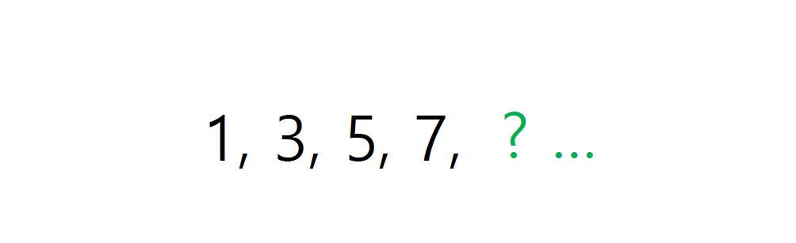
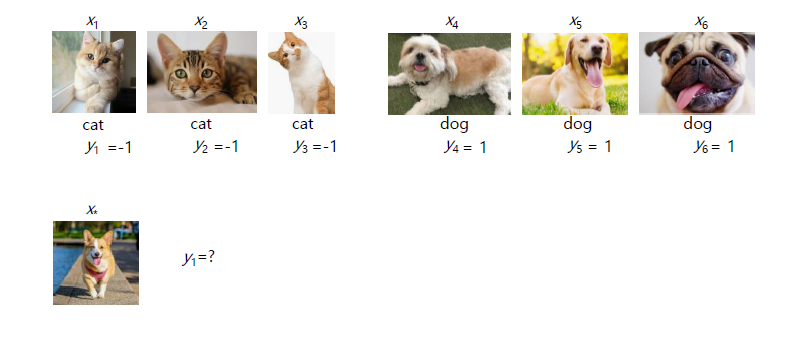
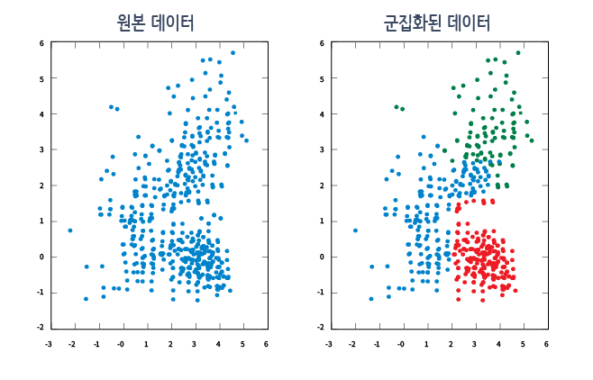
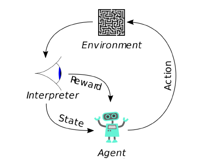

머신러닝(Machine Learning)
머신러닝이란 무엇인가?
다음에 올 숫자는 무엇일까?

간단하게 9라는 답들이 나왔을 것이다.이 간단한 추론 속에 3단계나 존재한다.
-
현상(숫자들의 변화)을 관찰한다. -
관찰한 현상의 규칙을 통해
모델(예상 가능한 규칙)을 만든다. -
다음에 일어날 현상(다음에 올 숫자)을
예측한다.
이와 같은 학습을 프로그래밍을 통해 학습시키는 것을 머신러닝(Machine Learning)이라고 한다.
머신러닝은 자료(data)를 기반으로 하는 학습한다. 이 자료를 잘 가공하고 그에 맞는 모델을 만들기 위해서는 여러가지 지식이 필요하다.
- 수학적 지식(통계, 선형대수, 미적분 등)
- 최적화
- 프로그래밍 지식
머신러닝의 필요성
머신러닝의 필요성은 광범위한 분야에서 필요로 하고 있다. 아래의 내용은 필요성이 인식되는 분야의 일부를 나열한 것이다.
-
글 인식(Text)
스팸 필터링 글 분류(분야별 뉴스 정리) 검색 엔진 알고리즘 에세이 마킹(오타 및 출처) 소셜 미디어 모니터링(트렌드 파악) -
의학촬영과 진단
의학촬영기법의 향상 질병 진단 발병 위험성 진단 임상 실험 예측(피험자가 필요없는 예측 모델링) -
인간-컴퓨터 상호작용 (Human-Computer Interaction)
핸드 제스처(Hand Gesture) 인식 손글씨 및 음성 인식 개인 비서 서비스(Siri, Bixby) 추천 시스템(사용자 니즈(needs) 파악) 자동 디자인 시스템 -
사람
맞춤형 광고 서비스 투표예측 재무 법의학(법의학 회계) 계약 관리 및 분석 테러예측(공항 내 의심물질 파악) -
금융
금융사기 적발 금융상품 제작 트레이딩 봇 -
로보틱스
인간화 로봇 자율주행 자동차 프로그램 게이머(Deep Mind의 Alpha Go)
머신러닝의 과정
머신러닝의 과정은 우리가 시작할 때 봤던 수학적 추론의 과정과 유사하게 진행이 된다.
-
문제가 주어진다.(혹은, 해결해야 문제를 선택한다)
-
필요한 정보(데이터)를 모은다. (Training Data)
-
필요한 정보나 결과에 맞추어 모델을 선택하거나 만든다.
-
모델을 최적화 알고리즘을 이용하여서 데이터를 이용한 추론에 적당하도록 맞춘다.
-
새로운 데이터를 이용해서 모델의 정확성을 확인한다. (Testing Data)
머신러닝의 방법
머신러닝의 방법은 크게 지도학습과 비지도학습 그리고 강화 학습으로 나눌 수 있다.
A. 지도학습(Supervised Learning)

지도학습은 정답을 알려준 뒤에 학습시키는 방법이다.
위에 사진에서 볼 수 있듯이, 고양이 사진과 강아지 사진(input data - trainng data)에 따른 정답지(label data)를 알려준 뒤에
다른 사진(new data - testing data)을 맞추도록 지도하는 방법이다.
분류(Classification) - 데이터의 결과값이 이산적일 경우
회귀(Regression) - 데이터의 결과값이 연속적일 경우
랭킹(Ranking) - 데이터의 결과값이 비교가능한 상태일 경우
B. 비지도학습(Unsupervised Learning)

비지도학습은 정답지를 주지 않고 직접 문제를 분류하게 하는 방법이다.
여러 문제들을 학습하면서 직접 데이터의 패턴, 특성 및 구조를 스스로 파악하여, 이를 통해 새로운 데이터의 특징을 파악하는 방법이다.
지도학습처럼 사전지식이 주어지지 않지만, 직접 파악할 수 없는 숨겨진 특성이나 구조 등을 파악할 수 있다는 장점이 있습니다.
군집화(Clustering)
- 데이터간의 거리를 이용하여 특정 그룹으로 묶는 방법
확률밀도추정(Density Estimation)
- 주어진 데이터를 이용하여 만든 확률분포로 추정하는 방법
C. 강화학습(Reinforce Learning)

상과 벌이라는 보상(Reward)을 주며 상을 최대화하고, 벌의 최소화하도록 강화 학습하는 방식